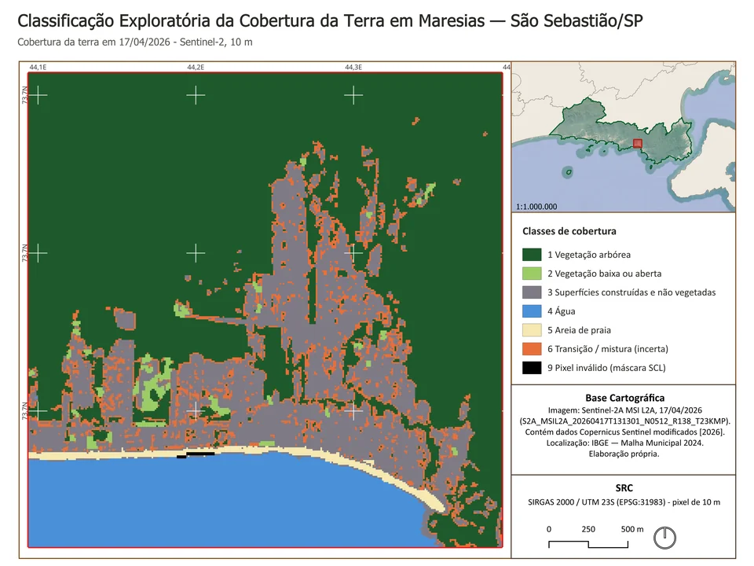
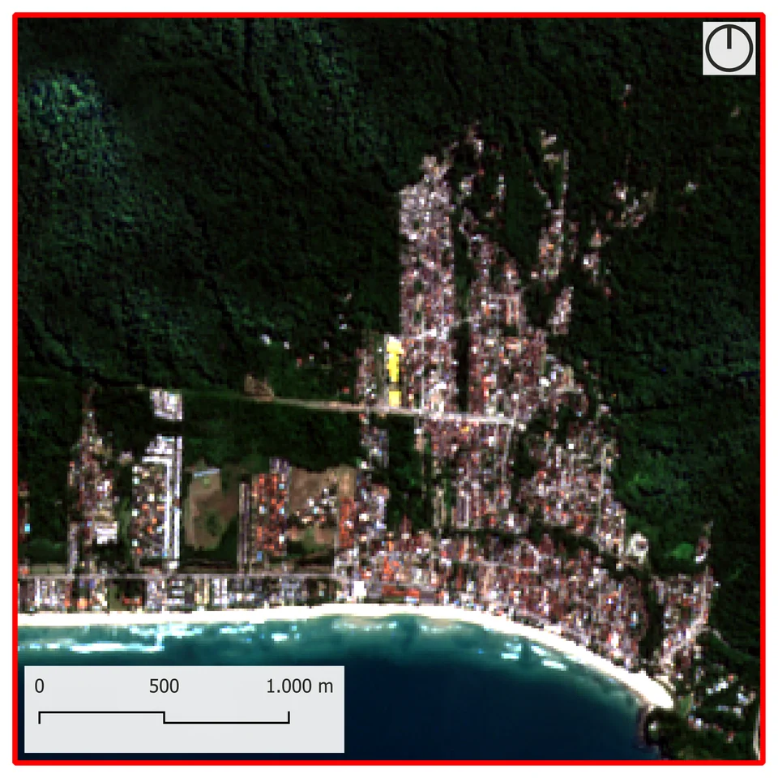

03 Project · São Sebastião, Brazil
Land Cover Classification in Maresias
An exploratory study with satellite imagery, spectral indices and rule-based classification in QGIS
Maresias, São Sebastião, São Paulo, Brazil
Overview
An investigation of land cover in a 9 km² window of Maresias, in São Sebastião, São Paulo state, where the Serra do Mar range, in the Atlantic Forest biome, meets the ocean. Within a few kilometres the landscape changes from forested slopes to the settled plain, the beach and the sea. The study tests what a single satellite image can tell apart in this setting and explicitly flags where the reading becomes uncertain. It is an exploratory classification, without field validation.
Problem
To what extent can a satellite image identify and distinguish different types of land cover in Maresias, and which areas show the greatest classification uncertainty? With 10 m pixels, tree crown, roof, soil and sand often combine within one pixel, especially along the edges between forest and settlement.
Objective
Test which basic land cover patterns — forest, settlement, beach and water — a single scene separates consistently, using spectral bands, indices and explicit rules in QGIS, and document where the separation stops being reliable, without treating the result as a map of proven accuracy.
Methods & tools
- Image selection: Sentinel-2A scene from 17 April 2026, chosen among 32 scenes for the lowest cloud presence measured over the window itself.
- Preparation of the visible and infrared bands on a common 10 m grid, with clouds and shadows removed.
- True-colour and near-infrared false-colour composites for visual reading of the landscape.
- Exploratory classification with explicit spectral rules, complemented by contextual rules: sand only next to water, open vegetation only in compact patches and ambiguous pixels kept as transition/mixed. No classifier was trained.
- Class quantification by pixel count, with water excluded from the denominator, and comparison of the land–sea boundary with the OpenStreetMap coastline.
Data sources
- Copernicus Sentinel-2A MSI L2A — cena S2A_MSIL2A_20260417T131301_N0512_R138_T23KMP (17/04/2026); contém dados Copernicus Sentinel modificados [2026]
- IBGE — Biomas e Sistema Costeiro-Marinho do Brasil, 1:250.000 (2025)
- IBGE — Malhas Municipais 2024 e 2020
- © colaboradores do OpenStreetMap (ODbL) — linha de costa, usada só para conferência
- Mapas de localização: imagem de fundo Google Satellite (© Google)
Data belong to their respective sources and are subject to their own terms of use.
Results
68.8%
of the valid land area (5.27 of 7.66 km²) was mapped as tree cover, mostly on the slopes. The class includes backyard trees and does not prove native forest.
21.1%
(1.62 km²) are built-up and other non-vegetated surfaces: roofs, roads, bare soil and wet sand, not only urban settlement.
7.3%
(0.56 km²) was kept as transition/mixed: mixed pixels at edges and in backyards flagged as uncertain. Beach sand (0.12 km²) and low or open vegetation (0.10 km²) complete the land area; water (1.34 km²) is excluded from the denominator.
4.9 m
is the median distance between the edge of the classified water and the OpenStreetMap coastline: the land–sea boundary is consistent, within less than one pixel.
Maps & charts
Click the image to zoom in; drag or scroll to move around.


Enlarge image

Enlarge imageExplore additional maps, charts, and results in the full report available at the end of this page.
Limitations
- An exploratory study of a single date, with no field validation and no independent accuracy assessment; not an official map.
- 10 m resolution (20 m for band B11): many pixels mix tree crown, roof and soil, which creates uncertain transition areas.
- Some covers are hard to separate: lawns and open vegetation respond much like forest edges and wooded backyards.
- The classes are broad: tree cover is not the same as native forest, and built-up and other non-vegetated surfaces are not the same as urban land.
Full materials
Full report (PDF, Portuguese)
Document in Portuguese.
Full report (PDF, Portuguese) (Opens in a new tab)Code on GitHub
gabrielloubarboza/Cobertura_da_Terra_em_Sao_Sebastiao_SP
Data (GeoPackage)
Licence: Derived from Copernicus Sentinel data (“contains modified Copernicus Sentinel data [2026]”) and IBGE data (reuse with source citation)
Not distributed: Original Sentinel-2 bands and original IBGE files; the repository's script 01 downloads them from the official sources. IBGE's 2020 municipal boundaries, used in the location map, have their download link in the README.